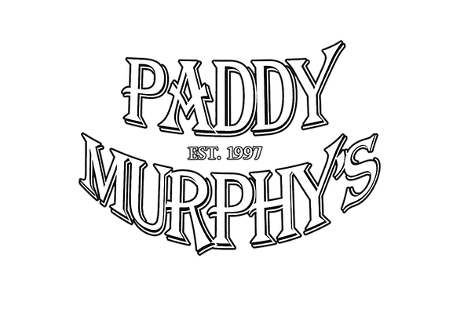
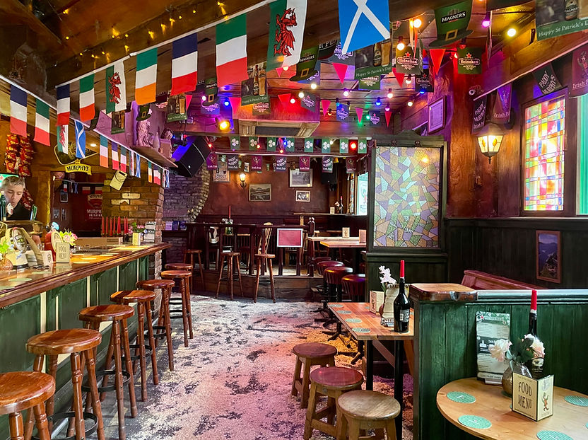
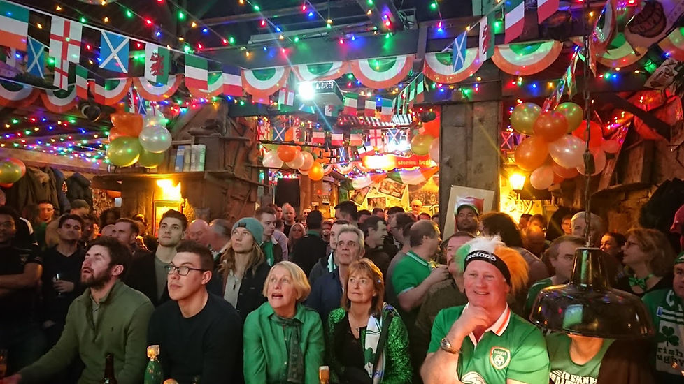
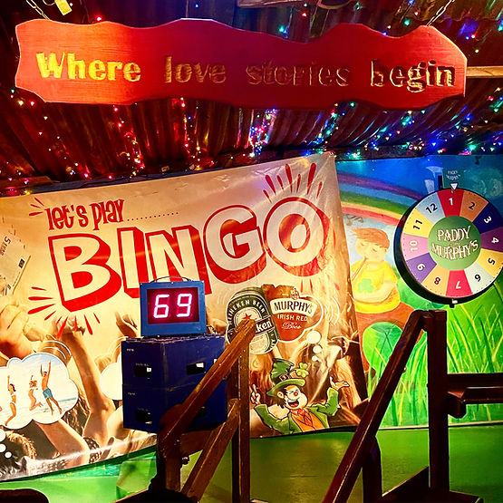

Maandag 16 november
Voetbal
- 20.45Zwitserland - Schotland
- 20.45Duitsland - Nederland


Elke avond live muziek op het podium en alle sport in HD op de schermen van onze sportsbar, met een ruime keuze aan bier en whisky.
Where love stories begin
Elke avond live muziek op het podium en alle beste sport in HD op de schermen van onze sportsbar.
We hebben een groot assortiment bieren en whisky's en een goed aanbod aan bar food en snacks, alles in een warme en vrolijke sfeer.
Pas op: Paddy Murphy's staat bekend om meerdere romances en meer dan zijn deel aan bruiloften. Zo erg zelfs dat onze slogan echt is: Paddy Murphy's, where love stories begin
.

Kom genieten van live muziek bij ons, zeven avonden per week. Het programma van november 2026.
Life is not a dress rehearsal. Let's Party!!
Alle beste sport in HD in onze sportsbar. Het schema van deze week (16 tot en met 22 november) wisselt wekelijks.

Voetbal
Voetbal
Voetbal
Rugby
Voetbal

Bingo hoort bij het programma. In november staat het op de agenda met live muziek erbij, op maandag 2, 9, 16, 23 en 30 november.

Een groot assortiment bieren en whisky's, plus bar food en snacks.
Wil je bij ons all-star team horen? Stuur dan je cv en een korte motivatiebrief naar werkenbij@drghoreca.nl.
Welkom bij Paddy Murphy's! We willen dat iedereen een geweldige avond heeft, dus houd je alsjeblieft aan deze regels. Laatst bijgewerkt op 7 oktober 2024.
Bedankt voor je begrip en medewerking!
| Maandag t/m donderdag | 15.00 uur |
|---|---|
| Vrijdag | 14.00 uur |
| Zaterdag en zondag | 12.00 uur |